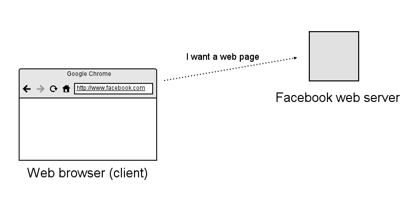
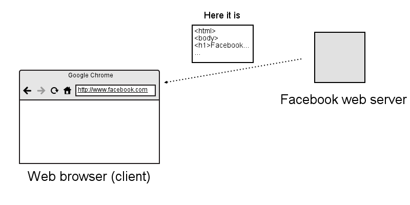
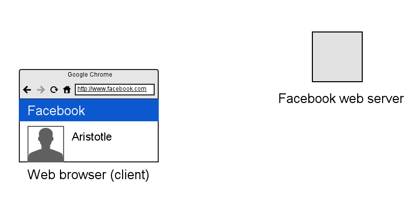

Terse introduction to web programming
Murilo Pereira (@mpereira), May 14th 2013

Me
- Dropped out of computer science
- Started a company called Meleva. It helps people share taxis in Brazil
- Startup Chile
- Programming professionally since 2010
Programming: why should you care?
- Will you start your own company?
- Do you have ideas for creating businesses?
- Being a god
- Automating boring tasks
Knowning how to tell computers what to do is a powerful thing
Sometimes it will be frustrating, though
Starting off
Q: what's the world wide web made of?
A: Web browsers and servers (connected by cables)
Web browser makes the request to the server
Web server responds to the web browser with a file
Web browser renders file sent by the web server
HTML
The file received and rendered by the web browser is an HTML file. This type of file is made of plain text formatted in a way that browsers interpret its content and render it accordingly.
HTML is used to represent the content of web pages (text, images, links, etc.)
Example HTML file
<html>
<body>
<h1>Hello World</h1>
<p>First steps in HTML<p>
</body>
</html>
Hello World
First steps in HTML
CSS
Along with the HTML file returned by the web server may come a CSS file. CSS is a language used to specify how the HTML should be rendered on web browsers. It says how the layout, colors, fonts and other things should look like.
CSS is used to describe the presentation of web pages (how they look).
Example CSS file
body { background-color: yellow; }
h1 { font-size: 30px; }
p { border: 5px solid blue }}
HTML + CSS
<html>
<body>
<h1>Hello World</h1>
<p>First steps in HTML<p>
</body>
</html>
body { background-color: yellow; }
h1 { font-style: italic; }
p { border: 5px solid blue }
HTML + CSS
Hello World
First steps in HTML
JavaScript
- Programming language
- Manipulate web pages (HTML and CSS)
"Hacking" with JavaScript
Fun with Mark Zuckerberg's Facebook profile
var profilePic = document.getElementsByClassName('profilePic')[0];
profilePic.src = 'http://i276.photobucket.com/albums/kk8/martinthurssoon/th_ZuckerMovie.gif';
profilePic.src = 'http://cdn.uproxx.com/wp-content/uploads/2012/05/mark-zuckerberg.jpg';
var profileName = document.getElementsByClassName('_8_2')[0];
profileName.innerHTML = 'Marky Zubemkerg $$$';
var nyanCat = document.createElement('img');
nyanCat.src = 'http://fc05.deviantart.net/fs70/f/2012/168/e/4/nyan_cat__sparta__gif__by_lookincool45-d53trrz.gif';
nyanCat.style.position = 'absolute';
nyanCat.style.top = '350px';
nyanCat.style.left = '150px';
nyanCat.style.width = '80%';
nyanCat.style.zIndex = '1000';
document.getElementsByTagName('body')[0].appendChild(nyanCat);
Making Barack Obama's Wikipedia page more memorable
var image = document.getElementsByClassName('image')[0].getElementsByTagName('img')[0];
image.src = 'http://i.minus.com/ibnMfO5dXlo1FG.gif';
Practical uses
You can use HTML, CSS and JavaScript to make lots of things:
- Web sites
- Games
- Mobile applications
With JavaScript alone you can program pretty much anything:
- Web servers
- Robots
- Flying robots
- Laser beams
Example game made using HTML, CSS and JavaScript
Summing up
- Learning how to program allows you to implement your own ideas
- Getting the basics is not hard and can get you a long way
- Even if you are not interested in following a programming career, having a decent grasp of how computers work will change the way you solve problems
- Programming is fun and you should do it
Inspiration
Further reading
Caveat
While it's possible for you to learn enough --for some definition of enough-- becoming a great programmer requires tens of thousands of hours of hard work.